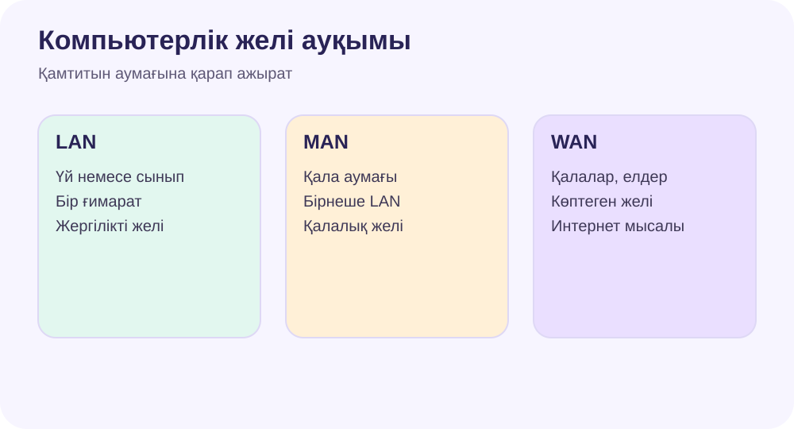
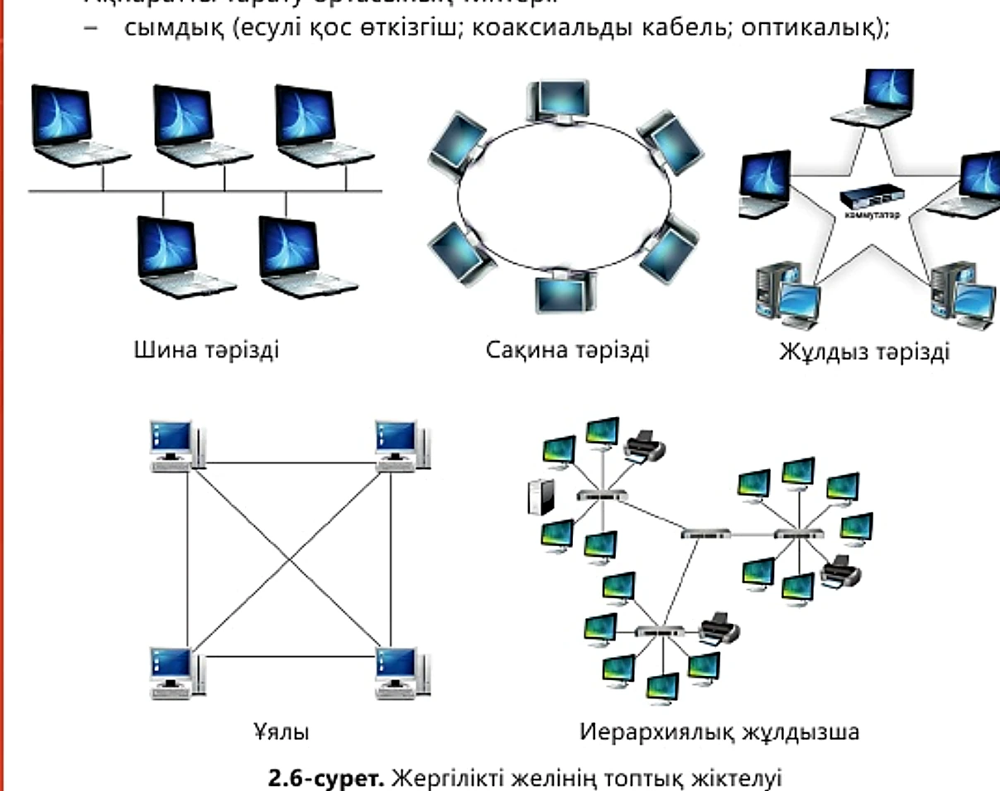
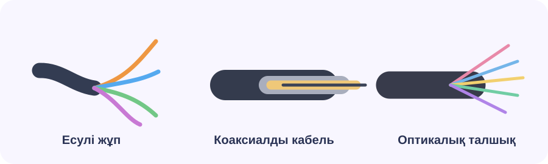
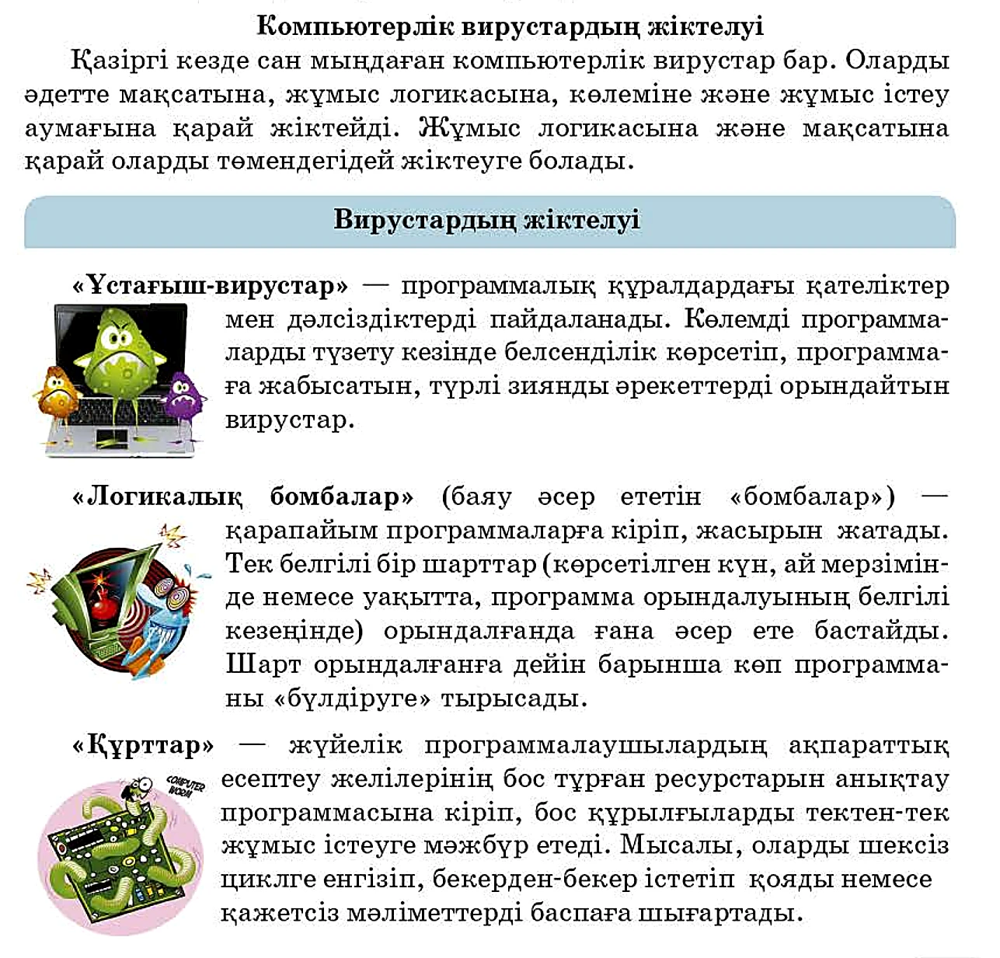
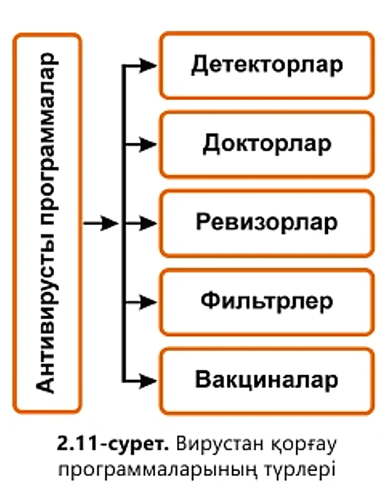
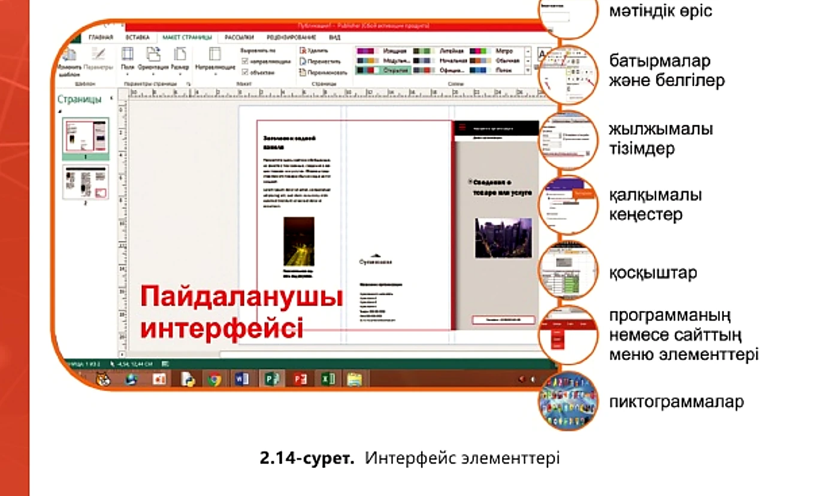

Бір бөлме немесе ғимарат ішіндегі жергілікті желі.
MAN
Қала немесе ірі аймақ деңгейіндегі желі.
WAN
Үлкен аумақтағы, бірнеше желіні жалғайтын желі.
Есте сақта: ауқым — желінің қай жерді қамтитыны; топология — құрылғылардың қалай жалғанғаны.

Желі ауқымының көрнекі сызбасы. Суретті түртіп үлкейтіңіз.

Шина, сақина, жұлдыз және басқа топологиялар.
Топологияны суреттен таны
Шина: барлығы бір ортақ магистральға қосылған.
Сақина: түйіндер тұйық шеңбер құрайды.
Жұлдыз: әр түйін орталық құрылғыға қосылады.
Толық: әр түйін өзгелермен тікелей байланысады.
Жұлдызда бір шеткі кабель үзілсе, әдетте тек сол түйін ажырайды. Орталық құрылғы істен шықса, бүкіл сегмент зардап шегеді.
Дерек өтетін орта
Есулі жұп пен коаксиалды кабель электр сигналын, оптикалық талшық жарық сигналын, Wi‑Fi радиосигналды қолданады.
Құрылғылар: коммутатор жергілікті желі ішіндегі құрылғыларды байланыстырады; маршрутизатор әртүрлі желілер арасындағы пакеттерді бағыттайды. Концентратор (hub) — бірнеше компьютерді бір жергілікті желіге қосатын құрылғы. Ол келген сигналды барлық портқа таратады; коммутатор болса, деректі қажетті портқа ғана жібереді. Мысалы, А компьютері В-ға хабар жіберсе, концентратор оны С-ға да таратады, ал коммутатор В-ға бағыттайды.

Сымдық дерек тасымалдау орталары.
ТЕРЕҢІРЕК ТҮСІН
Желіні таңдаудың логикасы
LAN · жергілікті
Бір кабинет, мектеп не ғимарат ішіндегі құрылғыларды байланыстырады. Файлды ортақ пайдалану, принтерге қосылу және бір жердегі компьютерлер арасында алмасу үшін қолданылады.
Мысал: 20 компьютер бір коммутаторға қосылған компьютер кабинеті.
MAN · аймақтық
Қала деңгейіндегі бірнеше жергілікті желіні біріктіре алады. Бір қаланың мектептері арасында байланыс ұйымдастыруға мысал бола алады.
Назар аудар: бір қаланың ішінде орналасу автоматты түрде бір LAN дегенді білдірмейді.
WAN · ауқымды
Қалалар мен елдер арасындағы алыс желілерді біріктіреді. Интернет — ең белгілі ауқымды желілердің бірі.
Мысал: екі қаланың кеңселері арасындағы байланыс.
Коммутатор
Жергілікті сегмент ішіндегі құрылғыларды жалғайды. Кадрды тиісті портқа жеткізуге көмектеседі.
Маршрутизатор
Әртүрлі желілердің арасындағы пакеттерге бағыт таңдайды. Үй желісінен Интернетке шығу осы құрылғы арқылы ұйымдастырылуы мүмкін.
Тасымалдау ортасы
Есулі жұп — жақын кабельдік байланыс; оптикалық талшық — жарық сигналымен алыс және кедергіге төзімді байланыс; Wi‑Fi — радиосигнал.
Есеп тәсілі: төрт түйіннің әрқайсысы қалған үшеуімен тікелей байланысса, бір сызықты екі рет санама. Байланыс саны 4×3÷2 = 6.
ИНТЕРАКТИВТІ МОДЕЛЬ
Бір пакеттің жолын бақыла
Топологияны ауыстырып, түйінге басыңыз. Дерек пакеті қалай жүретінін бақылаңыз.
Түйінді таңдаңыз: дерек қызғылт нүкте болып қозғалады.
Ойлан: орталық құрылғы өшсе қай топологияда көбірек түйін ажырайды?
02 / ҚАУІПСІЗДІК
Қауіпті белгісінен таны
Зиянды бағдарламалардың айырмасы
Вирус
Өз кодын файлға немесе бағдарламаға тіркеп таралады.
Құрт
Желі арқылы өздігінен тарала алады.
Троян
Пайдалы бағдарлама кейпіне енеді.
Фишинг — зиянды код түрі емес; ол адамды алдап, логин не құпиясөзді алуға бағытталған әрекет.

Зиянды бағдарламалардың түрлері.

Антивирустық бағдарламалардың түрлері.
Қорғаныстың 4 қадамы
Жүйе мен антивирусты жаңарт.
Күдікті сілтеме мен тіркемені ашпа.
Әр аккаунтқа бірегей құпиясөз қой.
Маңызды файлдардың резерв көшірмесін сақта.
Белгісіз «бағаңызды көру» сілтемесіне кірмес бұрын ресми сайттың мекенжайын өзіңіз теріп тексеріңіз.
ҚАУІПСІЗДІК СЦЕНАРИЙІ
Хатты ашпас бұрын бес тексеру
1. Жіберуші
Аты таныс болғанымен, нақты адресін тексер. Аккаунт бұзылса, таныс адамның атынан да хат келуі мүмкін.
2. Сілтеме
Мекенжайды оқы: ресми доменге ұқсас, бірақ бір әрпі өзгеше адрес қауіп белгісі. Мекемеге өзің терген ресми сайт арқылы кір.
3. Тіркеме
«Есеп.pdf.exe» сияқты қос кеңейтімге назар аудар. Файл атауын өзгерту зиянды кодты қауіпсіз етпейді.
4. Растау
Күдікті хабарды жіберушімен басқа байланыс арнасы арқылы раста. Хаттың өзіне жауап беріп сұрау жеткіліксіз.
5. Қорғаныс
Жүйені жаңартып, бірегей құпиясөз қолдан және маңызды файлдың резерв көшірмесін сақта.
Егер ашып қойсаң
Құпиясөз енгізген болсаң, ресми сайт арқылы дереу ауыстыр; құрылғыны қауіпсіздік бағдарламасымен тексер.
Интерфейс — пайдаланушы мен бағдарлама әрекеттесетін орта. Желі топологиясымен шатастырмаңыз.

Графикалық интерфейс элементтері.
ҚАДАММЕН ТҮСІН
Желі қалай жұмыс істейді?
Құрылғыларды қосу, мекенжайды табу және хабарды жеткізу жолын бір мысалмен қара.
1. Құрылғыларды қос
LAN — үй, сынып не бір ғимарат ішіндегі жергілікті желі. MAN қала ауқымын, WAN алыс аймақтарды біріктіреді. Интернет — көптеген желілердің қосылған жүйесі. Екі сынып компьютері бір роутерге жалғанса, олар бір LAN ішінде болады.
2. Деректің жолын таңда
Коммутатор (switch) бір жергілікті желідегі құрылғыларды қосады. Маршрутизатор (router) әртүрлі желілер арасындағы бағытты таңдайды. Мысалы, мектеп компьютері сыртқы сайтқа сұрау жіберсе, дерек алдымен жергілікті құрылғыға, кейін роутер арқылы интернетке өтеді.
3. Топологияны ажырат
Жұлдызда әр компьютер орталық құрылғыға жалғанады: бір кабель үзілсе, сол компьютер ажырайды. Шинада барлық құрылғы ортақ арнаны пайдаланады. Сақинада құрылғылар тұйық шеңбер құрады. Сызбадағы кабель жолын саусағыңмен жүргізіп көр: ол топологияны тануға көмектеседі.
ТЕКСЕР
Үйдегі Wi-Fi қай желі?
Телефон мен ноутбук бір роутерге қосылған. Бұл — LAN. Роутер интернетке қосылғанда LAN сыртқы WAN-пен байланысады.
ТЕКСЕР
100 Мбит/с нені білдіреді?
Бұл — секундына 100 миллион битке дейінгі жылдамдық атауы. Байтқа жуықтап аудару үшін 8-ге бөл: 12,5 Мбайт/с (нақты жылдамдық желі жағдайына тәуелді).
ӨЗІҢДІ ҚОРҒА
Қауіпсіздікті нақты жағдаймен үйрен
Вирус пен фишинг
Вирус файлға жабысып, іске қосылғанда таралуы мүмкін. Фишинг — жалған сайт не хабар арқылы парольді алуға тырысу. Мысалы, «бағаңды көр» деген сілтеме бейтаныс мекенжайға апарса, пароль жазба: мектептің ресми мекенжайын өзің теріп аш.
Қауіпсіз әрекет алгоритмі
Жіберуші мен сайт мекенжайын тексер.
Күдікті файлды ашпа және белгісіз бағдарлама орнатпа.
Жүйе мен антивирусты жаңарт.
Маңызды жұмыстың резерв көшірмесін жаса.
Антивирус көмектеседі, бірақ сенің сілтемені тексеру әдетің де қажет.
Интерфейс: GUI және CLI
GUI терезе, белгіше, мәзір және батырмалар арқылы басқарылады. Мысалы, файлды тышқанмен ашу. CLI мәтіндік командалармен жұмыс істейді. Мысалы, терминалда python main.py жазу. Екі тәсіл де компьютерге әрекетті түсіндіреді.
2026 СПЕЦИФИКАЦИЯСЫНА САЙ ФОРМАТ
ҰБТ стиліндегі 40 сұрақ
25 жеке сұрақ · 1 контексттегі 5 сұрақ · 5 сәйкестік · 5 бірнеше жауап. Деңгейлер: A 50%, B 30%, C 20%.